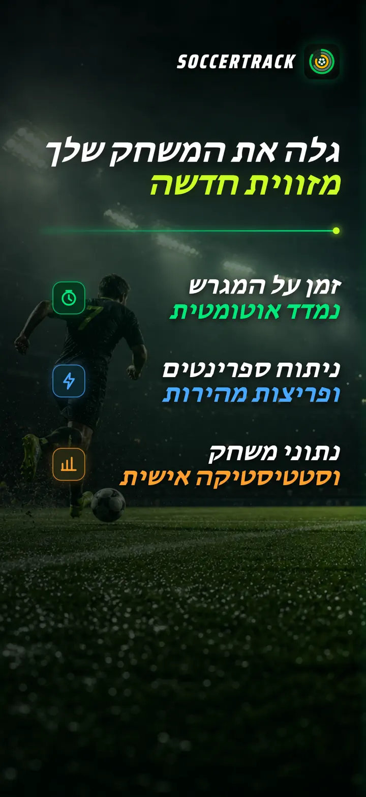
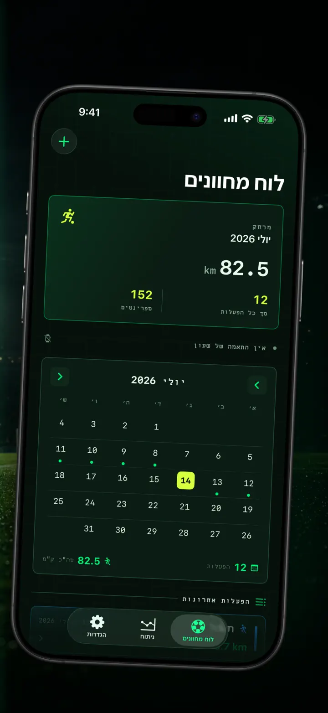
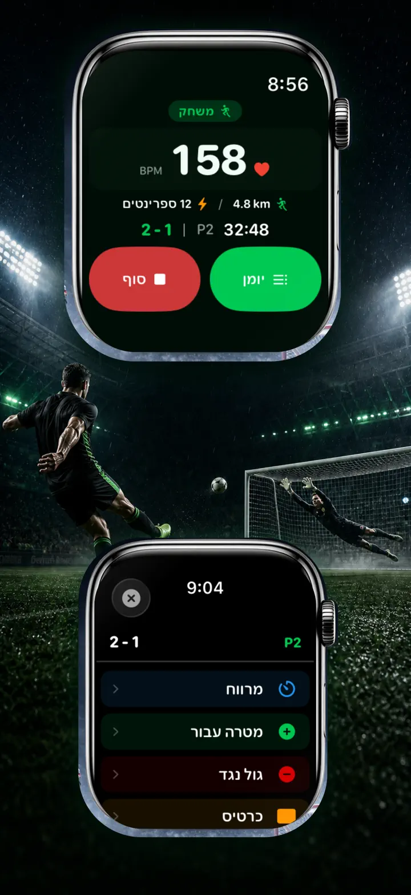
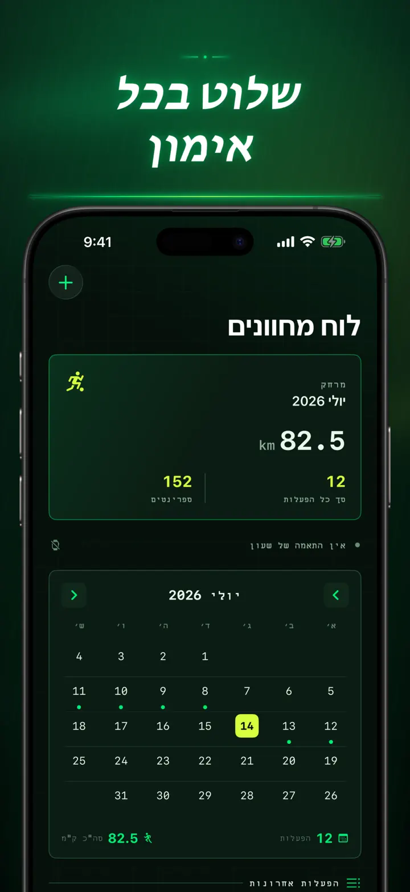
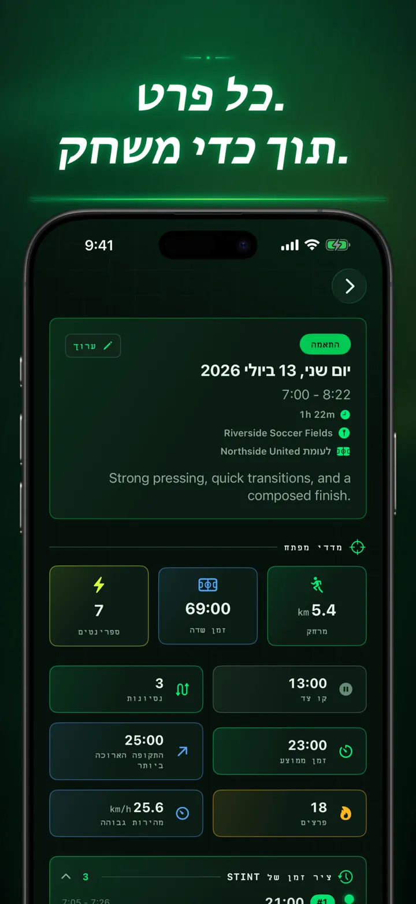
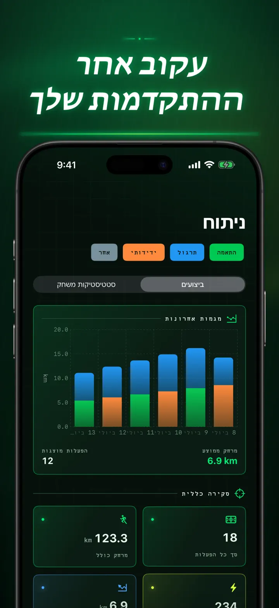
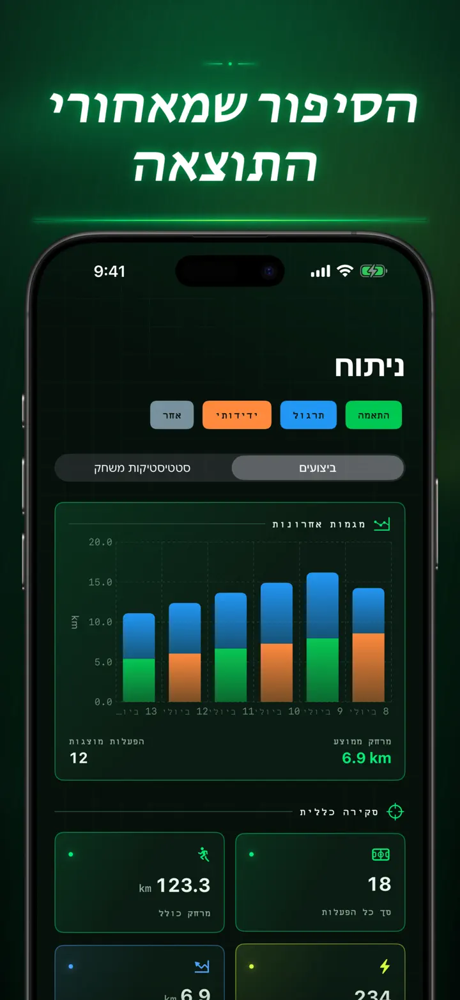
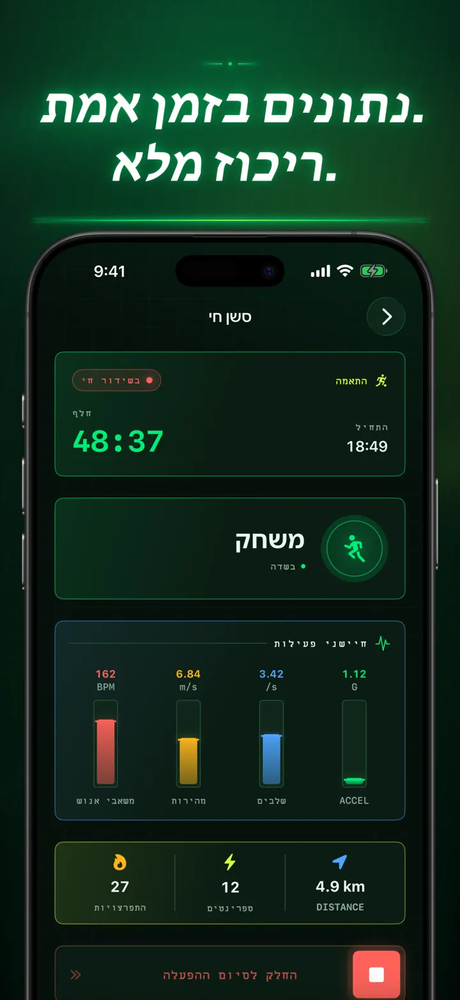
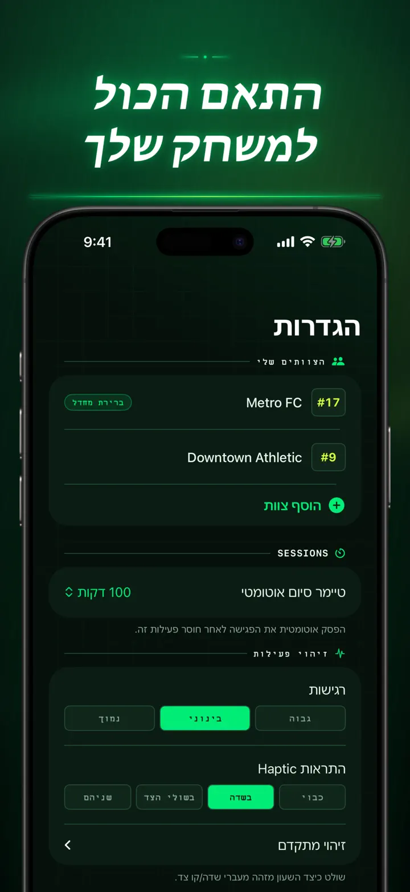
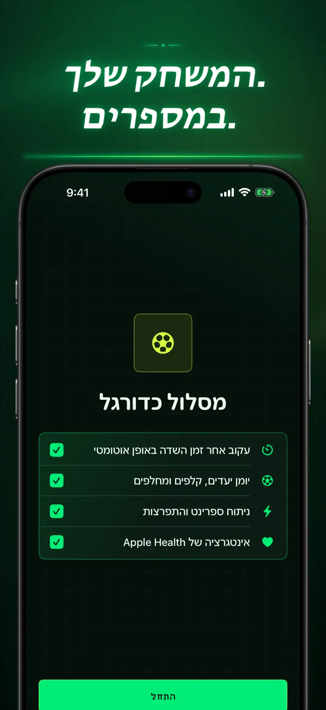

Soccer Time Track
זמן משחק וניתוח כדורגל
מתחילים אימון ופשוט משחקים. Apple Watch מפריד אוטומטית בין זמן על המגרש לזמן על הספסל ומתעד מדדים חיים, ספרינטים, אירועי משחק ומגמות.
הורדה מה-App Store
על האפליקציה
לראות את המשחק מזווית אחרת.
Soccer Time Track הופך את Apple Watch לעוזר ביום המשחק עבור שחקנים שרוצים להבין הרבה מעבר לתוצאה הסופית. מתחילים מפרק כף היד, מתמקדים במשחק ואז סוקרים ב-iPhone תמונה מפורטת של הביצועים.
זמן על המגרש באופן אוטומטי
אפשר לדעת מתי באמת הייתם בתוך המשחק. אותות תנועה, אימון ומיקום עוזרים להבחין בין משחק, פעילות נמוכה וזמן על הספסל. תקבלו:
- זמן על המגרש וזמן על הספסל
- מקטעי משחק וציר זמן ברור
- פירוט מלא של התפתחות האימון
יום המשחק מפרק כף היד
בחרו משחק, אימון, משחק ידידות או אחר. במהלך המשחק תעדו:
- שערים לזכות ולחובת הקבוצה
- השערים והבישולים שלכם
- כרטיסים צהובים ואדומים
- חילופים ומעברים בין מחציות
המשחק שלכם, במספרים
הרבה מעבר לדקות, עם מדדים כמו:
- מרחק
- מהירות ממוצעת ומרבית
- ספרינטים ופריצות בעצימות גבוהה
- דופק וקלוריות פעילות
- קצב צעדים ותאוצה
נתונים חיים, ריכוז מלא
iPhone מקושר יכול להציג מדדים חיים בזמן ש-Apple Watch ממשיך את האימון. אתם נשארים מרוכזים במשחק והנתונים נאספים ברקע.
רואים את ההתקדמות
רכזו משחקים, אימונים, משחקי ידידות ופעילויות אחרות בהיסטוריה אחת. גלו מגמות ושיאים אישיים, השוו ביצועים והוסיפו קבוצה, מספר חולצה, יריבה, מיקום והערות כדי לשמור את הסיפור שמאחורי כל תוצאה.
צריכים את הנתונים במקום אחר? אפשר לייצא אימונים, מקטעי משחק ואירועים בפורמט CSV או JSON.
מותאם ל-APPLE WATCH ול-APPLE HEALTH
ברשותכם, Soccer Time Track משתמש בנתוני אימון, דופק, תנועה ומיקום כדי ליצור תובנות ולשמור אימוני כדורגל שהושלמו ב-Apple Health. מעקב אוטומטי דורש Apple Watch. אפשר גם להוסיף אימון ידנית ב-iPhone.
הנתונים שלכם, המשחק שלכם
האימונים נשארים במכשירים שלכם, וכאשר סנכרון iCloud פועל, במסד הנתונים הפרטי שלכם ב-iCloud. Soccer Time Track אינו דורש חשבון, אינו מציג פרסומות ואינו משתמש בניתוח נתונים של צד שלישי.
מפסיקים לנחש כמה שיחקתם. מתחילים לראות מה עשיתם בכל דקה.
מדיניות פרטיות: https://masawata.net/SoccerTimeTrack/privacy-policy.html תנאי שירות: https://www.apple.com/legal/internet-services/itunes/dev/stdeula/
צילומי מסך









Soccer Time Track
מתחילים אימון ופשוט משחקים. Apple Watch מפריד אוטומטית בין זמן על המגרש לזמן על הספסל ומתעד מדדים חיים, ספרינטים, אירועי משחק ומגמות.
הורדה מה-App Store